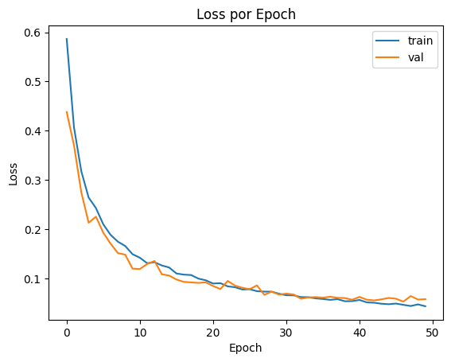
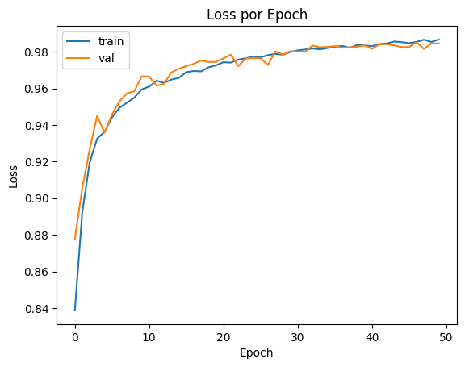
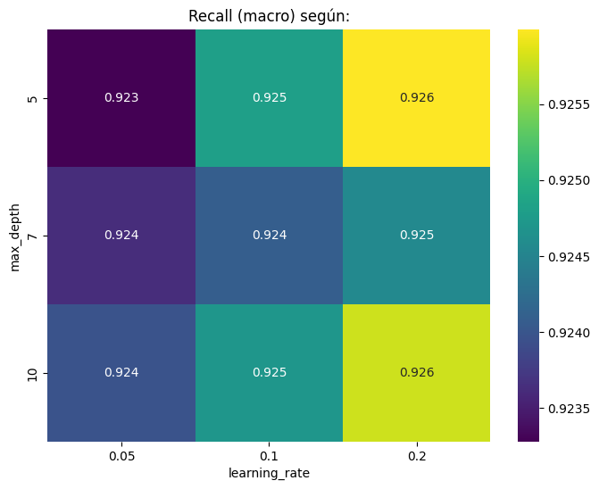
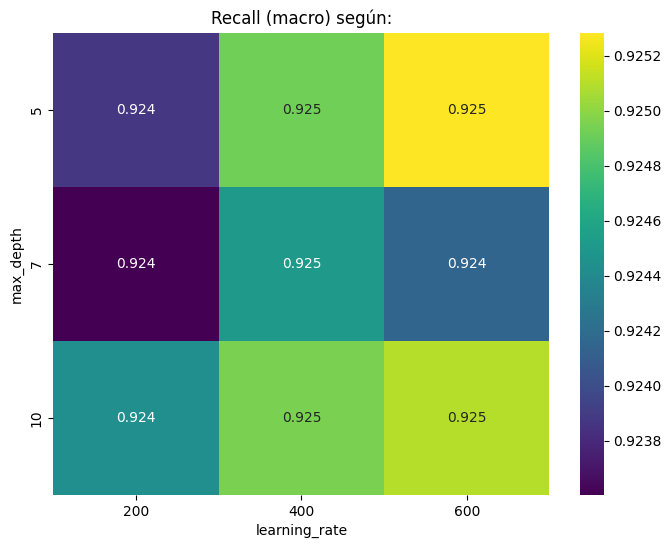
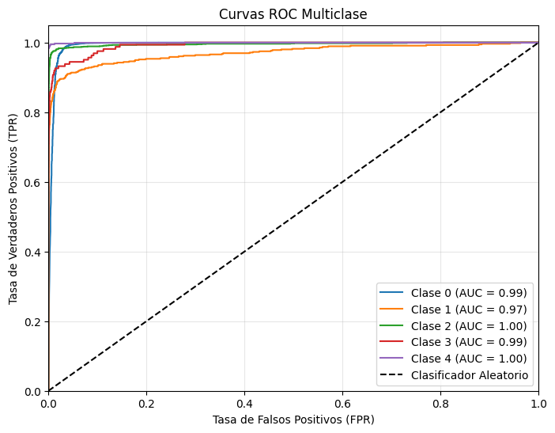
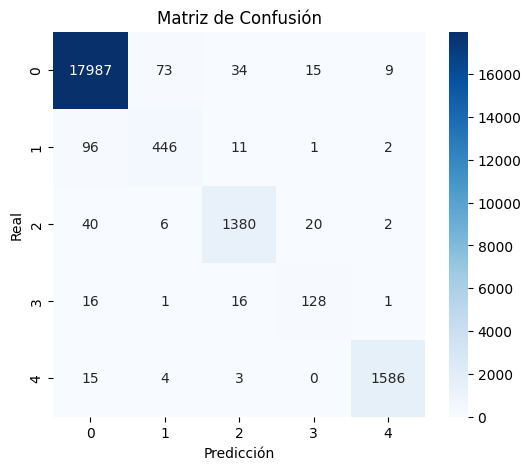
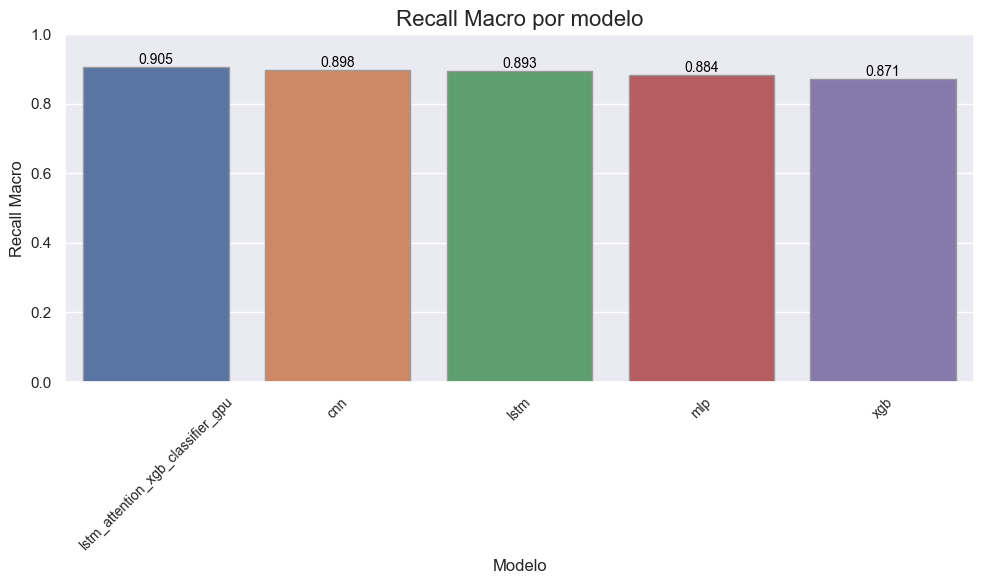

Modelo híbrido#
La propuesta de modelo híbrido propuesto consiste en híbrido LSTM con atención + un clasificador XGBoost, este arquitectura combina las fortalezas de las redes neuronales recurrentes (RNNs) con mecanismos de atención y el algoritmo de boosting de gradiente XGBoost para tareas de clasificación. Esta arquitectura, tiene los siguientes componentes:
Capa LSTM (Long Short-Term Memory):
Propósito: Captura las dependencias secuenciales en los datos de entrada. Las LSTM son especialmente efectivas para manejar secuencias largas, ya que mitigan el problema del desvanecimiento del gradiente presente en las RNNs tradicionales.
Funcionamiento: Utilizan celdas de memoria y puertas (input, forget, output) para controlar el flujo de información a lo largo de la secuencia, permitiendo recordar información relevante durante períodos extensos. Salida: Produce una secuencia de estados ocultos, donde cada estado representa la información aprendida hasta ese punto en la secuencia.
Mecanismo de Atención:
Propósito: Permite al modelo enfocarse en las partes más relevantes de la secuencia de salida de la LSTM al tomar una decisión. No todos los pasos en una secuencia son igualmente importantes para la clasificación final.
Funcionamiento: Asigna pesos de “atención” a los diferentes estados ocultos de la LSTM. Estos pesos indican la importancia relativa de cada paso de la secuencia para la tarea actual. Luego, se calcula una suma ponderada de estos estados ocultos, creando un “vector de contexto” o “representación atencional” de la secuencia.
Salida: Un vector de características de tamaño fijo que resume la información más importante de la secuencia de entrada, ponderada por su relevancia.
Clasificador XGBoost:
Propósito: Realiza la tarea final de clasificación utilizando el vector de características generado por la combinación de la LSTM con el mecanismo de atención.
Funcinamiento: XGBoost es un algoritmo de boosting de gradiente que construye múltiples árboles de decisión secuencialmente. Cada nuevo árbol corrige los errores cometidos por los árboles anteriores, lo que lleva a un modelo final robusto y preciso. Utiliza regularización para prevenir el sobreajuste y técnicas para manejar datos faltantes y optimizar la velocidad de procesamiento.
Entrada: El vector de contexto o representación atencional proveniente de la capa de atención aplicada a la salida de la LSTM.
Salida: La predicción de clase para la secuencia de entrada.
# Basic python libraries
import os
import time
import joblib
import pandas as pd
import numpy as np
# Visualizarition libraries
import matplotlib.pyplot as plt
import seaborn as sns
# sklearn
from sklearn.model_selection import GridSearchCV, train_test_split
from sklearn.utils.class_weight import compute_sample_weight
from sklearn.preprocessing import label_binarize
from sklearn.metrics import (
confusion_matrix, classification_report, recall_score, precision_score, accuracy_score, f1_score, roc_auc_score, make_scorer
)
# Modeling
import xgboost as xgb
import tensorflow as tf
from tensorflow import keras
from tensorflow.keras import layers, models, callbacks
try:
from google.colab import drive
drive.mount('/content/drive')
from google.colab import userdata
train_path = userdata.get('mitbih_train')
df_train = pd.read_csv(train_path, header=None)
test_path = userdata.get('mitbih_test')
df_test = pd.read_csv(test_path, header=None)
except:
train_path = "../../proyecto/data/mitbih_train.csv"
df_train = pd.read_csv(train_path, header=None)
test_path = "../../proyecto/data/mitbih_test.csv"
df_test = pd.read_csv(test_path, header=None)
Preparación de los Datos#
X = df_train.iloc[:, :-1].values.reshape((-1, 187, 1)).astype(np.float32)
X_test_final = df_test.iloc[:, :-1].values.reshape((-1, 187, 1)).astype(np.float32)
# Etiquetas (y) - Convertir a etiquetas numéricas para XGBoost
y_labels = df_train.iloc[:, -1].values.astype(int)
y_test_labels = df_test.iloc[:, -1].values.astype(int)
# División Train/Validation (para el extractor LSTM y potencialmente XGBoost)
X_train, X_val, y_train_labels, y_val_labels = train_test_split(
X, y_labels,
test_size=0.2,
stratify=y_labels, # Estratificar con etiquetas numéricas
random_state=42
)
print(f"Forma X_train: {X_train.shape}")
print(f"Forma y_train_labels: {y_train_labels.shape}")
print(f"Forma X_val: {X_val.shape}")
print(f"Forma y_val_labels: {y_val_labels.shape}")
print(f"Forma X_test_final: {X_test_final.shape}")
print(f"Forma y_test_labels: {y_test_labels.shape}")
num_classes = len(np.unique(y_train_labels))
print(f"Número de clases: {num_classes}")
Forma X_train: (70043, 187, 1)
Forma y_train_labels: (70043,)
Forma X_val: (17511, 187, 1)
Forma y_val_labels: (17511,)
Forma X_test_final: (21892, 187, 1)
Forma y_test_labels: (21892,)
Número de clases detectadas: 5
Entrenamiento del modelo híbrido#
Modelo LSTM con atención#
def build_lstm_attention_classifier(input_shape, num_classes, lstm_units=64, dense_units=64):
"""
Construye el modelo LSTM con Atención COMPLETO (incluyendo cabeza de clasificación)
para ser entrenado.
"""
inputs = keras.Input(shape=input_shape)
# Capa LSTM
lstm_out = layers.LSTM(lstm_units, return_sequences=True)(inputs)
# Capa de Atención
query = lstm_out
value = lstm_out
attention_out = layers.AdditiveAttention(name='attention_layer')([query, value])
# Reducción de dimensión
pool_out = layers.GlobalAveragePooling1D()(attention_out)
# Capa Densa ANTES de la clasificación (esta será la salida del extractor)
feature_vector = layers.Dense(dense_units, activation='relu', name='feature_vector_layer')(pool_out)
# Añadir Dropout si se desea regularizar el entrenamiento del extractor
feature_vector_dropout = layers.Dropout(0.3)(feature_vector) # Dropout opcional
# Cabeza de Clasificación (para entrenar el modelo)
outputs = layers.Dense(num_classes, activation='softmax', name='classification_head')(feature_vector_dropout) # Usar feature_vector_dropout si se añadió dropout
# Crear el modelo de entrenamiento completo
training_model = models.Model(inputs=inputs, outputs=outputs)
return training_model
input_shape = (X_train.shape[1], X_train.shape[2]) # (187, 1)
# Construir el modelo clasificador para entrenarlo
lstm_classifier_model = build_lstm_attention_classifier(
input_shape=input_shape,
num_classes=num_classes, # Pasar el número de clases
lstm_units=100, # Hiperparámetro ajustable
dense_units=50 # Hiperparámetro ajustable (tamaño final de características)
)
# Compilar el modelo para el entrenamiento
lstm_classifier_model.compile(
optimizer=keras.optimizers.Adam(learning_rate=1e-3), # Optimizador Adam con tasa de aprendizaje
loss='sparse_categorical_crossentropy', # Loss para etiquetas enteras
metrics=['accuracy'] # Métrica para monitorear
)
print("\n--- Resumen del Modelo Clasificador LSTM+Atención (para entrenamiento) ---")
lstm_classifier_model.summary()
--- Resumen del Modelo Clasificador LSTM+Atención (para entrenamiento) ---
Model: "model"
__________________________________________________________________________________________________
Layer (type) Output Shape Param # Connected to
==================================================================================================
input_1 (InputLayer) [(None, 187, 1)] 0 []
lstm (LSTM) (None, 187, 100) 40800 ['input_1[0][0]']
attention_layer (AdditiveAtten (None, 187, 100) 100 ['lstm[0][0]',
tion) 'lstm[0][0]']
global_average_pooling1d (Glob (None, 100) 0 ['attention_layer[0][0]']
alAveragePooling1D)
feature_vector_layer (Dense) (None, 50) 5050 ['global_average_pooling1d[0][0]'
]
dropout (Dropout) (None, 50) 0 ['feature_vector_layer[0][0]']
classification_head (Dense) (None, 5) 255 ['dropout[0][0]']
==================================================================================================
Total params: 46,205
Trainable params: 46,205
Non-trainable params: 0
__________________________________________________________________________________________________
print("\n--- Entrenando el Modelo LSTM+Atención ---")
early_stopping = callbacks.EarlyStopping(
monitor='val_loss', # Monitorear la pérdida en el set de validación
patience=10, # Número de épocas sin mejora antes de detener
restore_best_weights=True, # Restaurar pesos del mejor epoch
verbose=1
)
# Entrenar el modelo
history = lstm_classifier_model.fit(
X_train, y_train_labels,
epochs=50,
batch_size=64,
validation_data=(X_val, y_val_labels),
callbacks=[early_stopping],
verbose=1
)
--- Entrenando el Modelo LSTM+Atención ---
Epoch 1/50
1095/1095 [==============================] - 130s 112ms/step - loss: 0.5865 - accuracy: 0.8387 - val_loss: 0.4382 - val_accuracy: 0.8776
Epoch 2/50
1095/1095 [==============================] - 122s 111ms/step - loss: 0.4069 - accuracy: 0.8923 - val_loss: 0.3704 - val_accuracy: 0.9055
Epoch 3/50
1095/1095 [==============================] - 123s 112ms/step - loss: 0.3178 - accuracy: 0.9196 - val_loss: 0.2750 - val_accuracy: 0.9267
Epoch 4/50
1095/1095 [==============================] - 122s 111ms/step - loss: 0.2646 - accuracy: 0.9325 - val_loss: 0.2134 - val_accuracy: 0.9451
Epoch 5/50
1095/1095 [==============================] - 113s 103ms/step - loss: 0.2431 - accuracy: 0.9363 - val_loss: 0.2258 - val_accuracy: 0.9358
Epoch 6/50
1095/1095 [==============================] - 106s 97ms/step - loss: 0.2102 - accuracy: 0.9441 - val_loss: 0.1932 - val_accuracy: 0.9457
Epoch 7/50
1095/1095 [==============================] - 106s 97ms/step - loss: 0.1888 - accuracy: 0.9494 - val_loss: 0.1709 - val_accuracy: 0.9529
Epoch 8/50
1095/1095 [==============================] - 106s 97ms/step - loss: 0.1750 - accuracy: 0.9521 - val_loss: 0.1518 - val_accuracy: 0.9572
Epoch 9/50
1095/1095 [==============================] - 112s 102ms/step - loss: 0.1662 - accuracy: 0.9549 - val_loss: 0.1487 - val_accuracy: 0.9584
Epoch 10/50
1095/1095 [==============================] - 106s 97ms/step - loss: 0.1496 - accuracy: 0.9594 - val_loss: 0.1202 - val_accuracy: 0.9665
Epoch 11/50
1095/1095 [==============================] - 107s 97ms/step - loss: 0.1424 - accuracy: 0.9610 - val_loss: 0.1195 - val_accuracy: 0.9665
Epoch 12/50
1095/1095 [==============================] - 107s 98ms/step - loss: 0.1312 - accuracy: 0.9642 - val_loss: 0.1297 - val_accuracy: 0.9615
Epoch 13/50
1095/1095 [==============================] - 110s 100ms/step - loss: 0.1334 - accuracy: 0.9630 - val_loss: 0.1359 - val_accuracy: 0.9624
Epoch 14/50
1095/1095 [==============================] - 111s 101ms/step - loss: 0.1267 - accuracy: 0.9648 - val_loss: 0.1089 - val_accuracy: 0.9687
Epoch 15/50
1095/1095 [==============================] - 110s 100ms/step - loss: 0.1226 - accuracy: 0.9657 - val_loss: 0.1062 - val_accuracy: 0.9707
Epoch 16/50
1095/1095 [==============================] - 100s 92ms/step - loss: 0.1104 - accuracy: 0.9688 - val_loss: 0.0982 - val_accuracy: 0.9721
Epoch 17/50
1095/1095 [==============================] - 112s 102ms/step - loss: 0.1081 - accuracy: 0.9695 - val_loss: 0.0934 - val_accuracy: 0.9734
Epoch 18/50
1095/1095 [==============================] - 108s 98ms/step - loss: 0.1073 - accuracy: 0.9692 - val_loss: 0.0924 - val_accuracy: 0.9752
Epoch 19/50
1095/1095 [==============================] - 103s 94ms/step - loss: 0.1000 - accuracy: 0.9715 - val_loss: 0.0913 - val_accuracy: 0.9744
Epoch 20/50
1095/1095 [==============================] - 109s 99ms/step - loss: 0.0966 - accuracy: 0.9726 - val_loss: 0.0925 - val_accuracy: 0.9744
Epoch 21/50
1095/1095 [==============================] - 126s 115ms/step - loss: 0.0900 - accuracy: 0.9742 - val_loss: 0.0851 - val_accuracy: 0.9764
Epoch 22/50
1095/1095 [==============================] - 123s 112ms/step - loss: 0.0908 - accuracy: 0.9741 - val_loss: 0.0789 - val_accuracy: 0.9784
Epoch 23/50
1095/1095 [==============================] - 100s 92ms/step - loss: 0.0843 - accuracy: 0.9757 - val_loss: 0.0953 - val_accuracy: 0.9721
Epoch 24/50
1095/1095 [==============================] - 99s 91ms/step - loss: 0.0825 - accuracy: 0.9764 - val_loss: 0.0859 - val_accuracy: 0.9762
Epoch 25/50
1095/1095 [==============================] - 98s 90ms/step - loss: 0.0780 - accuracy: 0.9773 - val_loss: 0.0814 - val_accuracy: 0.9766
Epoch 26/50
1095/1095 [==============================] - 98s 89ms/step - loss: 0.0785 - accuracy: 0.9769 - val_loss: 0.0786 - val_accuracy: 0.9764
Epoch 27/50
1095/1095 [==============================] - 100s 92ms/step - loss: 0.0745 - accuracy: 0.9781 - val_loss: 0.0863 - val_accuracy: 0.9728
Epoch 28/50
1095/1095 [==============================] - 110s 101ms/step - loss: 0.0737 - accuracy: 0.9788 - val_loss: 0.0671 - val_accuracy: 0.9802
Epoch 29/50
1095/1095 [==============================] - 103s 94ms/step - loss: 0.0735 - accuracy: 0.9783 - val_loss: 0.0736 - val_accuracy: 0.9784
Epoch 30/50
1095/1095 [==============================] - 116s 106ms/step - loss: 0.0694 - accuracy: 0.9799 - val_loss: 0.0677 - val_accuracy: 0.9802
Epoch 31/50
1095/1095 [==============================] - 119s 109ms/step - loss: 0.0663 - accuracy: 0.9807 - val_loss: 0.0696 - val_accuracy: 0.9801
Epoch 32/50
1095/1095 [==============================] - 103s 94ms/step - loss: 0.0661 - accuracy: 0.9812 - val_loss: 0.0678 - val_accuracy: 0.9800
Epoch 33/50
1095/1095 [==============================] - 103s 94ms/step - loss: 0.0626 - accuracy: 0.9818 - val_loss: 0.0592 - val_accuracy: 0.9833
Epoch 34/50
1095/1095 [==============================] - 104s 95ms/step - loss: 0.0623 - accuracy: 0.9813 - val_loss: 0.0618 - val_accuracy: 0.9824
Epoch 35/50
1095/1095 [==============================] - 105s 96ms/step - loss: 0.0600 - accuracy: 0.9820 - val_loss: 0.0626 - val_accuracy: 0.9827
Epoch 36/50
1095/1095 [==============================] - 110s 100ms/step - loss: 0.0587 - accuracy: 0.9827 - val_loss: 0.0614 - val_accuracy: 0.9830
Epoch 37/50
1095/1095 [==============================] - 116s 106ms/step - loss: 0.0569 - accuracy: 0.9831 - val_loss: 0.0633 - val_accuracy: 0.9822
Epoch 38/50
1095/1095 [==============================] - 116s 106ms/step - loss: 0.0584 - accuracy: 0.9821 - val_loss: 0.0611 - val_accuracy: 0.9824
Epoch 39/50
1095/1095 [==============================] - 115s 105ms/step - loss: 0.0541 - accuracy: 0.9836 - val_loss: 0.0606 - val_accuracy: 0.9828
Epoch 40/50
1095/1095 [==============================] - 115s 105ms/step - loss: 0.0544 - accuracy: 0.9835 - val_loss: 0.0571 - val_accuracy: 0.9836
Epoch 41/50
1095/1095 [==============================] - 117s 107ms/step - loss: 0.0567 - accuracy: 0.9830 - val_loss: 0.0629 - val_accuracy: 0.9816
Epoch 42/50
1095/1095 [==============================] - 114s 105ms/step - loss: 0.0518 - accuracy: 0.9842 - val_loss: 0.0573 - val_accuracy: 0.9840
Epoch 43/50
1095/1095 [==============================] - 115s 105ms/step - loss: 0.0511 - accuracy: 0.9845 - val_loss: 0.0558 - val_accuracy: 0.9841
Epoch 44/50
1095/1095 [==============================] - 116s 106ms/step - loss: 0.0491 - accuracy: 0.9856 - val_loss: 0.0579 - val_accuracy: 0.9835
Epoch 45/50
1095/1095 [==============================] - 115s 105ms/step - loss: 0.0481 - accuracy: 0.9852 - val_loss: 0.0608 - val_accuracy: 0.9825
Epoch 46/50
1095/1095 [==============================] - 116s 106ms/step - loss: 0.0494 - accuracy: 0.9847 - val_loss: 0.0592 - val_accuracy: 0.9826
Epoch 47/50
1095/1095 [==============================] - 115s 105ms/step - loss: 0.0468 - accuracy: 0.9854 - val_loss: 0.0534 - val_accuracy: 0.9853
Epoch 48/50
1095/1095 [==============================] - 115s 105ms/step - loss: 0.0444 - accuracy: 0.9866 - val_loss: 0.0647 - val_accuracy: 0.9815
Epoch 49/50
1095/1095 [==============================] - 116s 106ms/step - loss: 0.0477 - accuracy: 0.9854 - val_loss: 0.0575 - val_accuracy: 0.9845
Epoch 50/50
1095/1095 [==============================] - 115s 105ms/step - loss: 0.0440 - accuracy: 0.9867 - val_loss: 0.0583 - val_accuracy: 0.9845
# Guardar modelo
model_name = "lstm_attention_classifier_model"
os.makedirs("models", exist_ok=True)
tf.keras.models.save_model(lstm_classifier_model, f'models/{model_name}.h5')
# Curva de pérdida
plt.figure()
plt.plot(history.history['loss'], label='train')
plt.plot(history.history['val_loss'], label='val')
plt.title('Loss por Epoch')
plt.xlabel('Epoch')
plt.ylabel('Loss')
plt.legend()
plt.show()

# Curva de pérdida
plt.figure()
plt.plot(history.history['accuracy'], label='train')
plt.plot(history.history['val_accuracy'], label='val')
plt.title('Loss por Epoch')
plt.xlabel('Epoch')
plt.ylabel('Loss')
plt.legend()
plt.show()

predicted_probabilities_lstm = lstm_classifier_model.predict(X_test_final)
predicted_labels_lstm = np.argmax(predicted_probabilities_lstm, axis=1)
print(f"Predicciones LSTM: {predicted_labels_lstm.shape}")
685/685 [==============================] - 22s 30ms/step
Predicciones LSTM: (21892,)
# Calcular Recall Macro
recall_macro_lstm = recall_score(y_test_labels, predicted_labels_lstm, average='macro')
print(f"Recall Macro (LSTM+Atención en Test): {recall_macro_lstm:.4f}")
Recall Macro (LSTM+Atención en Test): 0.8570
Modelo Extractor con Pesos Entrenados#
extractor_model_trained = models.Model(
inputs=lstm_classifier_model.input, # La misma entrada que el modelo original
outputs=lstm_classifier_model.get_layer('feature_vector_layer').output # Salida del vector de características
)
print("\n--- Resumen del Modelo Extractor ---")
extractor_model_trained.summary() # Resumen del modelo extractor que utiliza los pesos entrenados con el lstm_classifier_model
--- Resumen del Modelo Extractor ---
Model: "model_1"
__________________________________________________________________________________________________
Layer (type) Output Shape Param # Connected to
==================================================================================================
input_1 (InputLayer) [(None, 187, 1)] 0 []
lstm (LSTM) (None, 187, 100) 40800 ['input_1[0][0]']
attention_layer (AdditiveAtten (None, 187, 100) 100 ['lstm[0][0]',
tion) 'lstm[0][0]']
global_average_pooling1d (Glob (None, 100) 0 ['attention_layer[0][0]']
alAveragePooling1D)
feature_vector_layer (Dense) (None, 50) 5050 ['global_average_pooling1d[0][0]'
]
==================================================================================================
Total params: 45,950
Trainable params: 45,950
Non-trainable params: 0
__________________________________________________________________________________________________
# Usamos el modelo LSTM+Atención para transformar los datos
print("Extrayendo características del conjunto de entrenamiento...")
X_train_features = extractor_model_trained.predict(X_train)
print("Extrayendo características del conjunto de validación...")
X_val_features = extractor_model_trained.predict(X_val)
print("Extrayendo características del conjunto de prueba...")
X_test_features = extractor_model_trained.predict(X_test_final)
print(f"Forma X_train_features: {X_train_features.shape}")
print(f"Forma X_val_features: {X_val_features.shape}")
print(f"Forma X_test_features: {X_test_features.shape}")
Extrayendo características del conjunto de entrenamiento...
2189/2189 [==============================] - 46s 21ms/step
Extrayendo características del conjunto de validación...
548/548 [==============================] - 10s 19ms/step
Extrayendo características del conjunto de prueba...
685/685 [==============================] - 14s 20ms/step
Forma X_train_features: (70043, 50)
Forma X_val_features: (17511, 50)
Forma X_test_features: (21892, 50)
X_train_features[0]
array([0. , 0. , 0. , 0. , 0. ,
0. , 0. , 0.81207156, 1.164294 , 0. ,
0.37129626, 1.3763288 , 1.8110626 , 1.2658819 , 1.5656148 ,
0. , 1.8340144 , 0. , 0. , 0. ,
0.23777178, 0.07556218, 0.95247275, 0. , 1.9098388 ,
0. , 1.5795616 , 0.945864 , 1.371184 , 0. ,
0. , 0. , 1.3078353 , 0. , 0. ,
0. , 1.1045096 , 0.9812527 , 0. , 0. ,
0. , 0.96274734, 0. , 0. , 0. ,
1.8550042 , 0.48240715, 0. , 0. , 0. ],
dtype=float32)
XGBoost Grid Search#
xgb_base = xgb.XGBClassifier(
objective='multi:softmax',
num_class=num_classes,
eval_metric='mlogloss',
tree_method='hist',
device='cuda', # GPU
random_state=42,
verbosity=2
)
xgb_param_grid = {
'learning_rate': [0.05, 0.1, 0.2],
'max_depth': [5, 7, 10],
'n_estimators': [200, 400, 600]
}
fit_params = {
'eval_set': [(X_val_features, y_val_labels)],
}
scoring = {
'recall_macro': make_scorer(recall_score, average='macro')
}
grid_search = GridSearchCV(
estimator=xgb_base,
param_grid=xgb_param_grid,
scoring=scoring, # Métricas a calcular
refit='recall_macro', # Métrica para decidir el mejor modelo y reentrenar
cv=3,
verbose=2,
n_jobs=1
)
print("\n--- Iniciando GridSearchCV para XGBoost ... ---")
start_time_gs = time.time()
# Ejecutar la búsqueda. Pasamos fit_params usando **
grid_search.fit(X_train_features, y_train_labels, **fit_params)
grid_search_time = time.time() - start_time_gs
print(f"\n--- GridSearchCV completado en {grid_search_time:.2f} segundos ---")
# Guardar el modelo entrenado
model_filename_xgb = 'models/lstm_attention_xgb_classifier_gpu.joblib'
joblib.dump(grid_search, model_filename_xgb)
print(f"Modelo XGBoost guardado en: {model_filename_xgb}")
Modelo XGBoost guardado en: models/lstm_attention_xgb_classifier_gpu.joblib
grid_search.best_params_
{'learning_rate': 0.2, 'max_depth': 5, 'n_estimators': 600}
cv_results_df = pd.DataFrame(grid_search.cv_results_)
cv_results_df.columns
Index(['mean_fit_time', 'std_fit_time', 'mean_score_time', 'std_score_time',
'param_learning_rate', 'param_max_depth', 'param_n_estimators',
'params', 'split0_test_recall_macro', 'split1_test_recall_macro',
'split2_test_recall_macro', 'mean_test_recall_macro',
'std_test_recall_macro', 'rank_test_recall_macro'],
dtype='object')
pivot = cv_results_df.pivot_table(index='param_max_depth',
columns='param_learning_rate',
values='mean_test_recall_macro')
plt.figure(figsize=(8,6))
sns.heatmap(pivot, annot=True, fmt=".3f", cmap="viridis")
plt.title("Recall (macro) según:")
plt.xlabel("learning_rate")
plt.ylabel("max_depth")
plt.show()

pivot = cv_results_df.pivot_table(index='param_max_depth',
columns='param_n_estimators',
values='mean_test_recall_macro')
plt.figure(figsize=(8,6))
sns.heatmap(pivot, annot=True, fmt=".3f", cmap="viridis")
plt.title("Recall (macro) según:")
plt.xlabel("learning_rate")
plt.ylabel("max_depth")
plt.show()

XGBoost Entrenamiento final#
X_train_final = np.vstack((X_train_features, X_val_features))
y_train_final = np.concatenate((y_train_labels, y_val_labels))
print(f"Forma de datos combinados X: {X_train_final.shape}")
print(f"Forma de datos combinados y: {y_train_final.shape}")
Forma de datos combinados X: (87554, 50)
Forma de datos combinados y: (87554,)
final_xgb_model = xgb.XGBClassifier(
objective='multi:softmax',
num_class=num_classes,
tree_method='hist',
device='cuda',
random_state=42,
n_jobs=1,
learning_rate = 0.4,
max_depth = 8,
n_estimators = 800,
subsample = 0.4,
)
start_time_xgb_final = time.time()
weights = compute_sample_weight(class_weight='balanced', y=y_train_final)
final_xgb_model.fit(X_train_final, y_train_final, sample_weight=weights)
xgb_final_time = time.time() - start_time_xgb_final
y_pred_labels = final_xgb_model.predict(X_test_features)
y_pred_proba = final_xgb_model.predict_proba(X_test_features)
# Calculate evaluation metrics
precision_macro = precision_score(y_test_labels, y_pred_labels, average='macro')
recall_macro = recall_score(y_test_labels, y_pred_labels, average='macro')
accuracy = accuracy_score(y_test_labels, y_pred_labels)
f1_macro = f1_score(y_test_labels, y_pred_labels, average='macro')
cm = confusion_matrix(y_test_labels, y_pred_labels)
auc = roc_auc_score(y_test_labels, y_pred_proba, multi_class='ovr')
report = classification_report(y_test_labels, y_pred_labels)
results = {
'precision_test': precision_macro,
'recall_test': recall_macro,
'accuracy_test': accuracy,
'f1_score_test': f1_macro,
'confusion_matrix': cm,
'y_pred_prob': y_pred_proba,
'auc_test': auc,
'classification_report': report,
'cpu_time': np.nan,
}
joblib.dump(results, f"results/lstm_attention_xgb_classifier_gpu_results.pkl")
['results/lstm_attention_xgb_classifier_gpu_results.pkl']
Presentación de resultados finales#
from sklearn.metrics import roc_curve, auc # Dejarlo aquí
# Binarización de las clases
classes = np.unique(y_test_labels)
y_test_bin = label_binarize(y_test_labels, classes=classes)
n_classes = y_test_bin.shape[1]
# Inicialización de diccionarios para almacenar métricas
fpr, tpr, roc_auc = {}, {}, {}
# Cálculo de las curvas ROC y AUC
plt.figure(figsize=(8, 6))
for i in range(n_classes):
fpr[i], tpr[i], _ = roc_curve(y_test_bin[:, i], y_pred_proba[:, i])
roc_auc[i] = auc(fpr[i], tpr[i])
plt.plot(fpr[i], tpr[i], label=f'Clase {classes[i]} (AUC = {roc_auc[i]:.2f})')
# Gráfica de la línea diagonal (clasificador aleatorio)
plt.plot([0, 1], [0, 1], 'k--', label='Clasificador Aleatorio')
# Configuración de la gráfica
plt.xlim([0.0, 1.0])
plt.ylim([0.0, 1.05])
plt.xlabel('Tasa de Falsos Positivos (FPR)')
plt.ylabel('Tasa de Verdaderos Positivos (TPR)')
plt.title('Curvas ROC Multiclase')
plt.legend(loc="lower right")
plt.grid(alpha=0.3)

# Matriz de confusión
plt.figure(figsize=(6,5))
sns.heatmap(cm, annot=True, fmt="d", cmap="Blues")
plt.title("Matriz de Confusión")
plt.xlabel("Predicción")
plt.ylabel("Real")
plt.show()

print(report)
precision recall f1-score support
0 0.99 0.99 0.99 18118
1 0.84 0.80 0.82 556
2 0.96 0.95 0.95 1448
3 0.78 0.79 0.79 162
4 0.99 0.99 0.99 1608
accuracy 0.98 21892
macro avg 0.91 0.90 0.91 21892
weighted avg 0.98 0.98 0.98 21892
def cargar_resultados(directorio):
archivos = [f for f in os.listdir(directorio) if f.endswith(".pkl")]
resultados_totales = []
for archivo in archivos:
try:
data = joblib.load(os.path.join(directorio, archivo))
if isinstance(data, dict):
nombre_archivo_sin_extension = os.path.splitext(archivo)[0]
data["model_name"] = nombre_archivo_sin_extension
resultados_totales.append(data)
except Exception as e:
print(f"Error al cargar el archivo {archivo}: {e}")
return resultados_totales
resultados_totales = cargar_resultados('results/')
dict_to_df = []
for item in resultados_totales:
dict_to_df.append({
"model_name": item["model_name"].split("_results")[0],
"precission" : item["precision_test"],
"recall_macro": item["recall_test"],
"accuracy": item["accuracy_test"],
"f1_score": item["f1_score_test"],
"auc": item["auc_test"],
"total_cpu_time_min": item["cpu_time"]/60,
})
results_summary = pd.DataFrame(dict_to_df).sort_values(by="recall_macro", ascending=False).reset_index(drop=True)
results_summary
| model_name | precission | recall_macro | accuracy | f1_score | auc | total_cpu_time_min | |
|---|---|---|---|---|---|---|---|
| 0 | lstm_attention_xgb_classifier_gpu | 0.911945 | 0.904882 | 0.983327 | 0.908312 | 0.990102 | NaN |
| 1 | cnn | 0.942844 | 0.897814 | 0.984743 | 0.918445 | 0.988604 | 219.797408 |
| 2 | lstm | 0.938983 | 0.893313 | 0.984698 | 0.914197 | 0.991004 | 18.800000 |
| 3 | mlp | 0.904358 | 0.883581 | 0.977663 | 0.893657 | 0.984824 | 307.610415 |
| 4 | xgb | 0.959866 | 0.871120 | 0.982825 | 0.910275 | 0.991387 | 52.817633 |
| 5 | knn | 0.899565 | 0.868556 | 0.976201 | 0.883464 | 0.925557 | 32.473809 |
| 6 | autoencoder | 0.900989 | 0.855815 | 0.977298 | 0.876356 | 0.987603 | 458.988292 |
| 7 | tree | 0.831897 | 0.823717 | 0.961264 | 0.827697 | 0.903896 | 2.984338 |
| 8 | svc | 0.943355 | 0.814131 | 0.977389 | 0.866491 | 0.981456 | 287.041197 |
| 9 | rf | 0.962265 | 0.812568 | 0.974831 | 0.873681 | 0.992569 | 56.346595 |
| 10 | reglog | 0.787554 | 0.598089 | 0.914809 | 0.664022 | 0.917592 | 40.129006 |
| 11 | linear_svc | 0.851732 | 0.461934 | 0.904577 | 0.514120 | NaN | 5.678954 |
# Estilo de seaborn
sns.set_theme()
# Crear gráfico
plt.figure(figsize=(10, 6))
ax = sns.barplot(
data=results_summary.head(5), # Mostrar solo los 5 mejores modelos
x="model_name",
y="recall_macro",
hue='model_name',
palette="deep",
edgecolor=".6"
)
for p in ax.patches:
height = p.get_height()
ax.annotate(f'{height:.3f}',
(p.get_x() + p.get_width() / 2, height),
ha='center', va='bottom',
fontsize=10, color='black')
plt.title("Recall Macro por modelo", fontsize=16)
plt.xlabel("Modelo", fontsize=12)
plt.ylabel("Recall Macro", fontsize=12)
plt.xticks(rotation=45, fontsize=10)
plt.ylim(0, 1)
plt.tight_layout()
plt.show()
